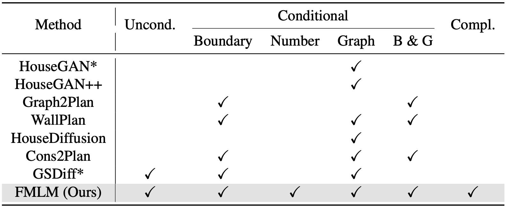
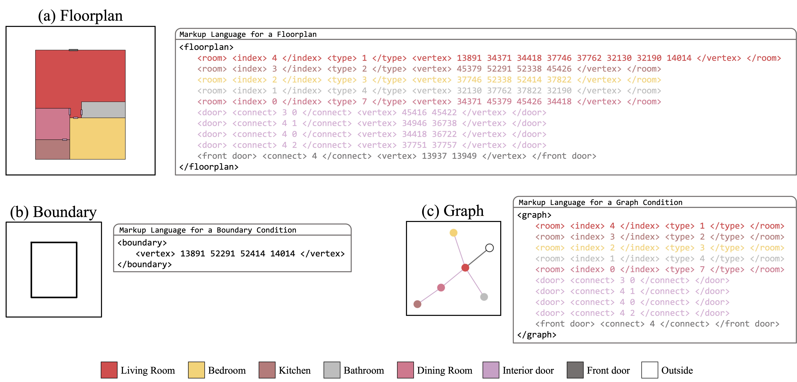
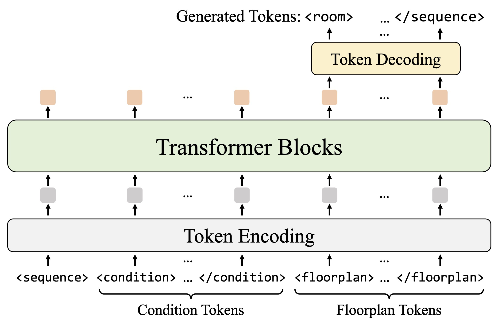
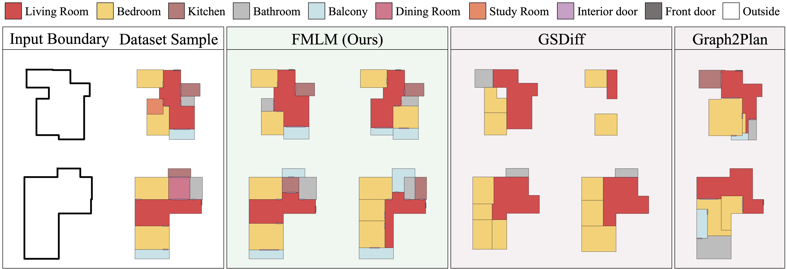
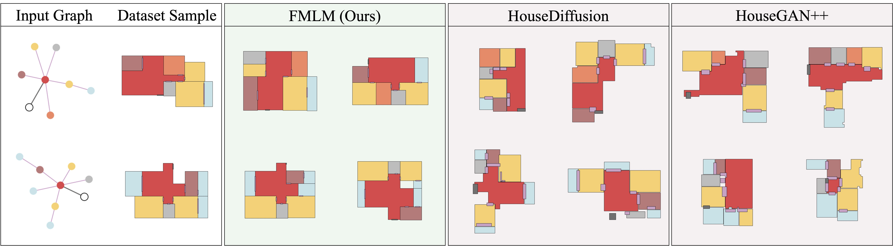
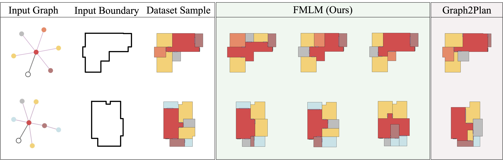

Our proposed "Floorplan Markup Language" unifies floorplan generation tasks into a next-token prediction task.

We introduce Floorplan Markup Language (FML) that represents the structural information of each floorplan and condition as a single markup-based sentence.
Once converted into FML, vector floorplan generation can be cast into Next-token Prediction.




Please refer to our research paper.
@article{shiohara2026unified,
author = {Shiohara, Kaede and Yamasaki, Toshihiko},
title = {Unified Vector Floorplan Generation via Markup Representation},
journal = {arXiv:2604.04859}
year = {2026},
}